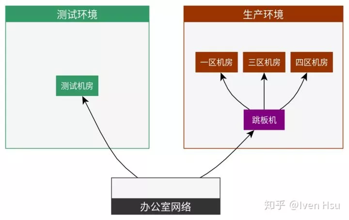

应用部署是软件开发中重要的一环，保持快速迭代、持续部署，减少变更和试错成本，对于互联网公司尤为重要。本文将从部署系统的角度，介绍知乎应用平台从无到有的演进过程，希望可以对大家有所参考和帮助。
知乎部署系统由知乎工程效率团队打造，服务于公司几乎所有业务，每日部署次数在 2000 次左右，在启用蓝绿部署的情况下，大部分业务的生产环境上线时间可以在 10 秒以下（不包含金丝雀灰度验证过程）。
目前知乎部署系统主要实现了以下功能：
支持容器、物理机部署，支持在线、离线服务、定时任务以及静态文件的部署
支持办公网络预上线
支持金丝雀灰度验证，期间支持故障检测以及自动回滚
支持蓝绿部署，在蓝绿部署情况下，上线和回滚时间均在秒级
支持部署 Merge Request 阶段的代码，用于调试
下文将按时间顺序，对部署系统的功能演进进行介绍。
技术背景
在介绍部署系统之前，首先需要对知乎的相关基础设施和网络情况进行简单的介绍。
知乎网络情况
知乎的网络如图所示：

知乎网络环境简图
主要划分为三个部分：
生产环境网络：即知乎对外的在线服务器网络，基于安全性考虑，与其他网络环境完全隔离。
测试环境网络：应用在部署到生产环境之前，首先会部署在测试环境，测试环境网络上与生产环境完全隔离。
办公室网络：即知乎员工内部网络，可以直接访问测试环境，也可以通过跳板机访问生产环境服务器。
流量管理
知乎采用 Nginx + HAProxy 的方式管理应用的流量走向：

知乎在线业务流量架构
应用开发者在 Nginx 平台上配置好 Location 和 HAProxy 的对应关系，再由 HAProxy 将流量分发到 Real Server 上去，同时 HAProxy 承担了负载均衡、限速、熔断等功能。
持续集成
知乎采用 Jenkins + Docker 进行持续集成，详见《知乎容器化构建系统设计和实践》（https://zhuanlan.zhihu.com/p/45694823），持续集成完成后，会生成 Artifact，供部署系统以及其他系统使用。
物理机部署
像大多数公司一样，知乎最开始是以物理机部署为主，业务自行编写脚本进行部署，部署时间长、风险大、难以回滚。在这种情况下，大约在 2015 年，初版的部署系统 nami （取名自《海贼王》娜美）诞生了。
最初的部署系统采用 Fabric 作为基础，将 CI 产生的 Artifact 上传到物理机上解压，并使用 Supervisor 进行进程管理，将服务启动起来：

物理机部署
初版的部署系统虽然简单，但是为了之后的改进奠定了基础，很多基础的概念，一直到现在还在使用。
应用（App）与服务（Unit）
与 CI 相同，每个应用对应一个 GitLab Repo，这个很好理解。
但是在实际使用过程中，我们发现，同一套代码，往往对应着多个运行时的服务，比如以部署系统 nami 本身为例，虽然是同一套代码，但是在启动的时候，又要分为：
API 服务
定时任务
Celery 离线队列
这些运行单元的启动命令、参数等各不相同，我们称之为服务（Unit）。用户需要在部署系统的前端界面上，为每个 Unit 进行启动参数、环境变量等设置，整个应用才能正常启动起来。
候选版本（Candidate）
所有的部署都是以 CI 产生 Artifact 作为基础，由于 Artifact 的不可变性，每次部署该 Artifact 的结果都是可预期的。也就是说，每个 Artifact 都是代码的一次快照，我们称之为部署的候选版本（ Candidate）。
由于每次 CI 都是由 GitLab 的 Merge Request 产生，候选版本，其实就是一次 MR 的结果，也就是一次代码变更。通常情况下，一个候选版本对应一个 Merge Request：

每个候选版本对应一个 Merge Request
如图所示是某个应用的候选版本列表，每个候选版本，用户都可以将其部署到多个部署阶段（Stage）。
部署阶段（Stage）
上文提到，知乎服务器网络分为测试环境和生产环境，网络之间完全隔离。应用总是先部署测试环境，成功后再部署生产环境。
在部署系统上，我们的做法是，对每个候选版本的部署，拆分成多个阶段（Stage）：

构建/部署阶段
图中该应用有 6 个阶段：
(B)构建阶段：即 CI 生成 Artifact 的过程。
(T)测试环境：网络、数据都与生产环境相隔离。
(O)办公室阶段：一个独立的容器，只有办公室网络可以访问，其他与线上环境相同，数据与生产环境共享。
(C)金丝雀1：生产环境 1% 的容器，外网可访问。
(C)金丝雀2：生产环境 20% 的容器，外网可访问。
(P)生产环境：生产环境 100% 容器，外网可访问。
部署阶段从前到后依次进行，每个 Stage 的部署逻辑大致相同。
对于每个部署阶段，用户可以单独设置，是否进行自动部署。如果所有部署阶段都选择自动部署，那么应用就处于一个持续部署（Continuous Deployment）的过程。
基于 Consul 和 HAProxy 的服务注册与发现
每次部署物理机时，都会先将机器从 Consul 上摘除，当部署完成后，重新注册到 Consul 上。
上文提到，我们通过 HAProxy 连接到 Real Server，原理就是基于 Consul Template 对 HAProxy 的配置进行更新，使其总是指向所有 RS 列表。
另外，在迁移到微服务架构之后，我们编写了一个称为 diplomat 的基础库，从 Consul 上拉取 RS 列表，用于 RPC 以及其他场景的服务发现。
容器部署
旧版容器系统 Bay
2015 年末，随着容器大潮的袭来，知乎也进入容器时代，我们基于 Mesos 做了初版的容器编排系统（称为 Bay），部署系统也很快支持了容器的部署。
Bay 的部署很简单，每个 Unit 对应一个容器组，用户可以手动设置容器组的数量和其他参数。每次部署的时候，滚动地上线新版本容器，下线旧版本容器，部署完成后所有旧版本容器就都已回收。对于一些拥有数百容器的大容器组，每次部署时间最长最长可以达到 18 分钟。
各项功能完善
在迁移到容器部署的过程中，我们对部署系统也进行了其他方面的完善。
首先是健康检查，所有 HTTP、RPC 服务，都需要实现一个 /check_health 接口，在部署完成后会对其进行检查，当其 HTTP Code 为 200 时，部署才算成功，否则就会报错。
其次是在线/离线服务的拆分，对于 HTTP、RPC 等在线业务，采用滚动部署；对于其他业务，则是先启动全量新版本容器，再下线旧版本容器。
预上线与灰度发布
基于容器，我们可以更灵活地增删 Real Server，这使得我们可以更简单地将流量拆分到不同候选版本的容器组中去，利用这一点，我们实现了办公室网络预上线和金丝雀灰度发布。
办公室网络预上线
为了验证知乎主站的变更，我们决定在办公室网络，提前访问已经合并到主干分支、但还没有上线的代码。我们在 Nginx 层面做了流量拆分，当访问源是办公室网络的时候，流量流向办公室专属的 HAProxy：

办公室流量拆分
对于部署系统来说，所需要做的就是在「生产环境」这个 Stage 之前，加入一个「办公室」Stage，对于这个 Stage，只部署一个容器，并将这个容器注册到办公室专属的 HAProxy，从外网无法访问此容器。
金丝雀灰度发布
在 2016 年以前，知乎部署都是全量上线，新的变更直接全量上线到外网，一旦出现问题，很可能导致整个网站宕机。
为了解决这个问题，我们在「办公室」和「生产环境」Stage 之间，加入了「金丝雀1」和「金丝雀2」两个 Stage，用于灰度验证。
原理是，部署一定量额外的新版本容器，通过 HAProxy，随机分发流量到这些新版本容器上，这样如果新版本代码存在问题，可以在指标系统上明显看出问题：

Nginx 指标大盘
其中，「金丝雀1」阶段只启动相当于「生产环境」阶段 1% 的容器，「金丝雀2」阶段则启动 20% 数量的容器。
为了避免每次部署到金丝雀后，都依赖人工去观察指标系统，我们在部署系统上，又开发了「金丝雀自动回滚」功能。主要原理是：
将金丝雀阶段的指标与生产环境的指标分离
金丝雀部署完成后，对指标进行检测，与生产环境进行对比，如果发现异常，则销毁金丝雀容器，并通知用户
如果在 6 分钟内没有发现指标异常，则认为代码没有明显问题，才允许用户部署「生产环境」Stage

金丝雀出现异常，回滚时会自动通知开发者
金丝雀阶段自动监测的指标包括该应用的错误数、响应时间、数据库慢查询数量、Sentry 报错数量、移动端 App 崩溃数量等等。
新版容器部署
针对旧版容器系统 Bay 部署速度慢、稳定性差等问题，我们将容器编排从 Mesos 切换到 Kubernetes，在此基础上开发出新一代的容器系统 NewBay。
相应地，部署系统也针对 NewBay 进行了一番改造，使得其在功能、速度上均有明显提升。
蓝绿部署
在旧版 Bay 中，每个 Unit 对应唯一的容器组，新版本容器会覆盖旧版本容器，这会导致：
一旦部署失败，服务将处于中间状态，新旧版本会同时在线
回滚旧版本代码速度较慢，而且有可能会失败
我们设计了一套新的部署逻辑，实现了蓝绿部署，即新旧版本容器组同时存在，使用 HAProxy 做流量切换：

蓝绿部署可以有效减少回滚时间
这使得：
流量的切换原子化，即使部署失败也不会存在新旧版本同时在线的情况
由于旧版本容器组会保留一段时间，这期间回滚代码仅需要将流量切回旧版本，回滚时间可以达到秒级
预部署
使用 NewBay 之后，大型项目的部署时间由原来的 18 分钟降至 3 分钟左右，但这其中仍有优化的空间。
为了加快部署速度，我们会在金丝雀阶段，提前将「生产环境」Stage 所需要的全量容器异步地启动起来，这样在部署「生产环境」Stage 时，仅需要将流量切换为全量即可：

预部署可以有效减少上线时间
通过这方面的优化，在全量上线到生产环境时，上线时间同样可以达到秒级。
分支部署
以上部署均是针对代码合并到主干分支后进行的部署操作，或者可以称之为「上线流程」。
但是实际上很多情况下，我们的代码在 Merge Request 阶段就需要进行部署，以方便开发者进行自测，或者交由 QA 团队测试。
我们在 CI/CD 层面对这种情况进行了支持，主要原理是在 MR 提交或者变更的时候就触发 CI/CD，将其部署到单独的容器上，方便开发者进行访问。

多个 Merge Request 同时部署和调试
分支部署实现细节较多，篇幅所限，在此不进行展开。
部署系统平台化
为了方便用户使用 CI/CD，管理应用资源，处理排查故障等，我们将整套知乎的开发流程进行了平台化，最终实现了 ZAE（Zhihu App Engine）：

ZAE 是一套完整的开发者平台
用户可以方便地查看部署进度和日志，并进行一些常规操作：

在 ZAE 上查看部署进度
尾声
知乎部署系统从 2015 年开始开发，到目前为止，功能上已经比较成熟。其实，部署系统所承担的责任不仅仅是上线这么简单，而是关系到应用从开发、上线到维护的方方面面。良好的部署系统，可以加快业务迭代速度、规避故障发生，进而影响到一家公司的产品发布节奏。
知乎部署系统以及 ZAE 开发者平台由知乎工程效率（EP）团队开发和维护，主要贡献者为@Iven Hsu@Cosven@Amyyyyy@lfyzjck。工程效率团队致力于提高业务开发效率，提高工程代码质量和业务交付质量，统一知乎开发者的开发规范、流程和框架。对于这方面感兴趣的小伙伴们，可以与 iven@zhihu.com 联系。
架构文摘
ID：ArchDigest
互联网应用架构丨架构技术丨大型网站丨大数据丨机器学习

更多精彩文章，请点击下方：阅读原文